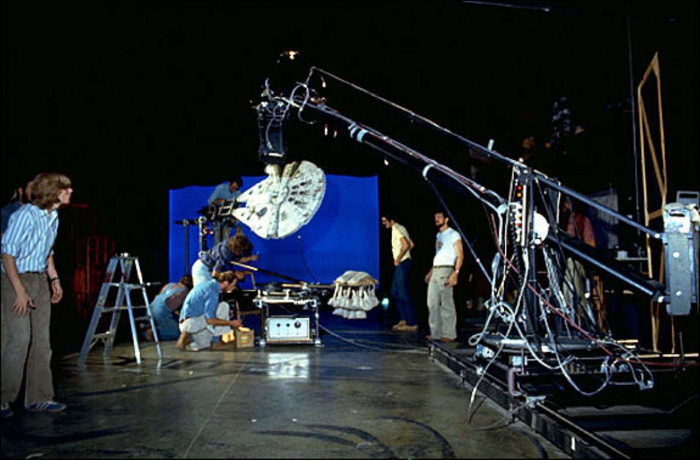

La trilogía original de Star Wars, compuesta por "A New Hope" (1977), "The Empire Strikes Back" (1980) y "Return of the Jedi" (1983), representó un hito significativo en la historia del cine y dejó una huella indeleble en la cultura popular. Los efectos especiales utilizados en estas películas fueron innovadores para su tiempo y contribuyeron enormemente a la narrativa y al atractivo visual de la saga.
Cuando George Lucas emprendió la realización de "A New Hope" en la década de 1970, enfrentó desafíos técnicos significativos. El presupuesto limitado y las restricciones tecnológicas de la época llevaron al equipo de producción a buscar soluciones creativas. Los efectos especiales se basaron en gran medida en técnicas prácticas, maquetas y modelos físicos. Industrial Light & Magic (ILM), la empresa fundada por Lucas para crear los efectos visuales, se convirtió en una fuerza pionera en la industria del cine.
La construcción de maquetas a escala fue una parte fundamental de los efectos visuales de la trilogía original. Los modelos detallados de naves espaciales como el Halcón Milenario y las estaciones espaciales imperiales se utilizaron para crear secuencias de vuelo y batallas espaciales. La habilidad de los artistas de ILM para dar vida a estas maquetas en pantalla mediante la composición óptica, una técnica que mezclaba varias imágenes en una sola, fue revolucionaria.
Otro aspecto destacado de los efectos visuales fue la utilización de animatrónicos y marionetas para dar vida a criaturas alienígenas y personajes como Yoda. En lugar de depender completamente de la animación por computadora, los cineastas de la trilogía original se apoyaron en el ingenio técnico y artístico para lograr efectos visuales convincentes. La marioneta de Yoda, diseñada por Frank Oz y manipulada por un equipo de titiriteros, se convirtió en un ícono por derecho propio.
Un momento clave en los efectos especiales de la trilogía original fue la creación de la Estrella de la Muerte en "A New Hope". La maqueta de esta estación espacial gigante, que medía aproximadamente 1.2 metros de diámetro, se utilizó en una variedad de tomas, desde los imponentes planos generales hasta los emocionantes combates espaciales. La combinación de maquetas, composición óptica y efectos prácticos permitió la creación de una de las escenas más memorables de la historia del cine.
A pesar de las limitaciones tecnológicas de la época, los cineastas de la trilogía original demostraron una creatividad sin igual al superar obstáculos y crear mundos visualmente impactantes. La transición hacia "The Empire Strikes Back" y "Return of the Jedi" vio una mejora constante en los efectos especiales, con la introducción de tecnologías como la animación por computadora en ciertos elementos.
En retrospectiva, los efectos especiales de la trilogía original no solo cumplieron su propósito narrativo, sino que también establecieron un estándar para la industria cinematográfica. La imaginación y la innovación de los artistas de ILM y del equipo de producción en general dejaron una marca duradera en la forma en que se conciben y realizan los efectos visuales en el cine. La trilogía original de Star Wars no solo contó una historia épica, sino que también revolucionó la forma en que vemos y experimentamos el cine de ciencia ficción.